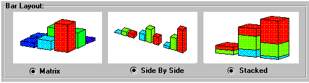
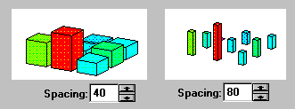

3D Plot Format Dialog Box (Special Tab) |
Fills the surface of the plot in the contour direction indicated in the drop-down menu at the bottom of the Contour Options section (z-contours by default).
Draws lines in the contour direction indicated in the drop-down menu at the bottom of the Contour Options section (z-contours by default).
Automatically determines the number of contour lines to draw in the contour direction indicated in the drop-down menu at the bottom of the Contour Options section (z-contours by default).
Shows numbers on the contour lines.
Determines the number of contour lines to draw in the contour direction indicated in the drop-down menu at the bottom of the Contour Options section (z-contours by default). Available only when Auto Contour is not checked.
Specifies a contour direction. After choosing a direction, specify the other options in the Contour Options section.
This button controls how the bars are organized on a 3D bar plot. The choices are:

Specifies the spacing between bars. The setting indicates the percentage of the grid that is space as opposed to bar. As you increase the percentage, the bars become skinnier.

This group is only active if you have created your surface plot by converting from a scatter plot. In such a case, you'll actually see an interpolated surface that approximates your scatter data.
To change the density of the mesh used for interpolation, edit the number of rows and columns in the Interpolated Mesh text boxes. If your data is not well approximated by a surface, it may be impossible to generate a useful interpolation. In such a case, you'll see an appropriate message on the message line.
Controls how the line connects the points when Data Points on the General tab and Lines on the Appearance tab are checked. Click one of the following options:
Specifies the kind of line that connects the points (solid, dashed, dotted, or dash-dot).